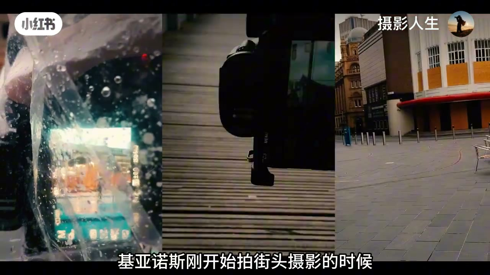
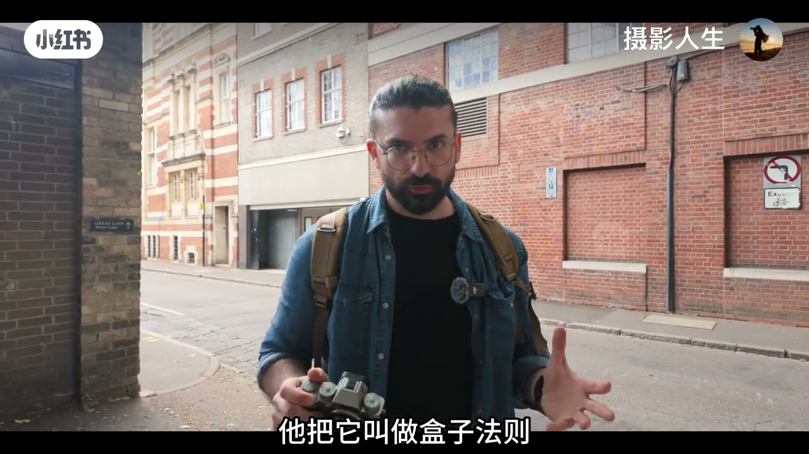
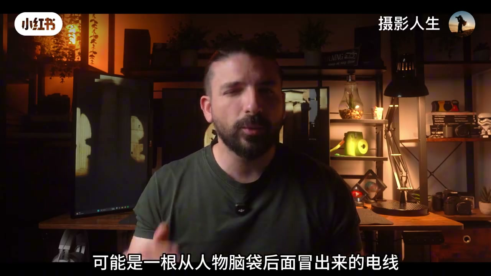
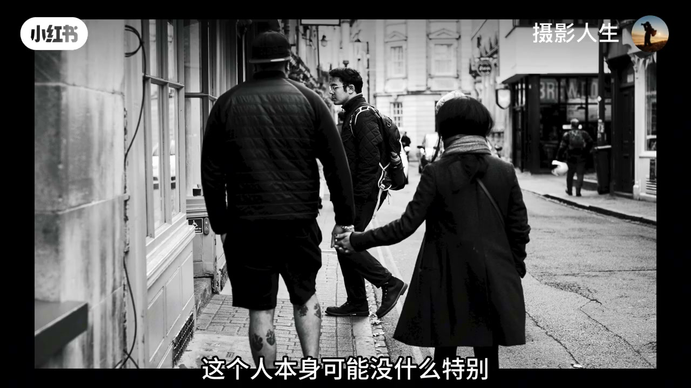
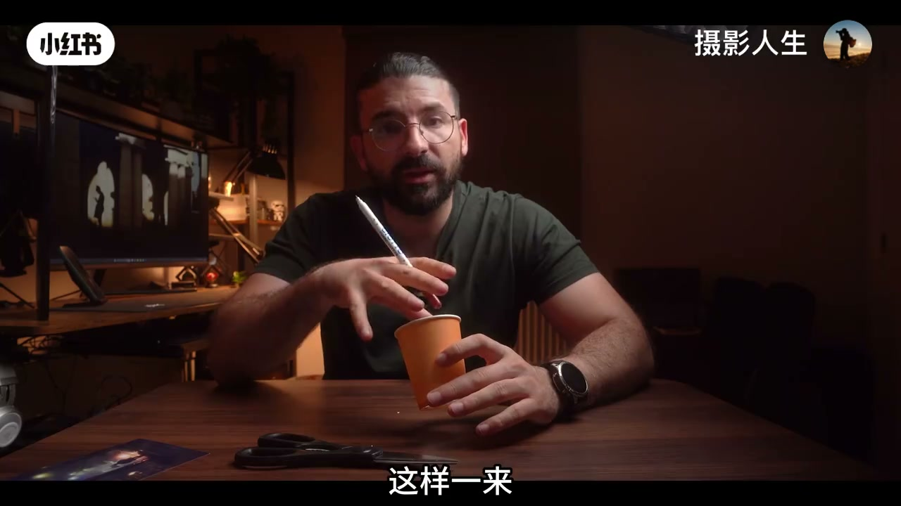
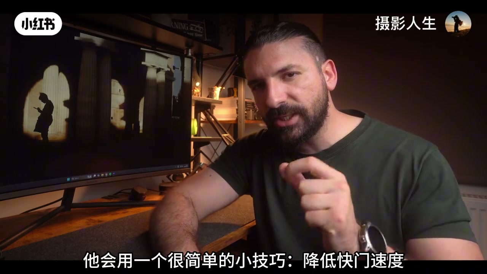
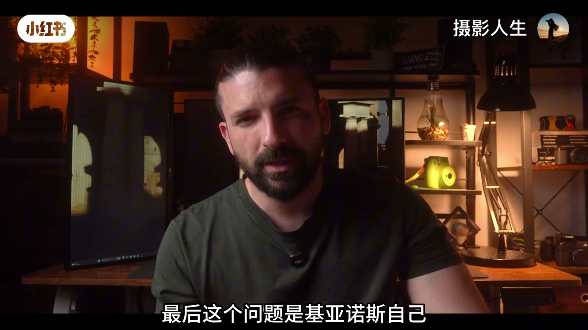
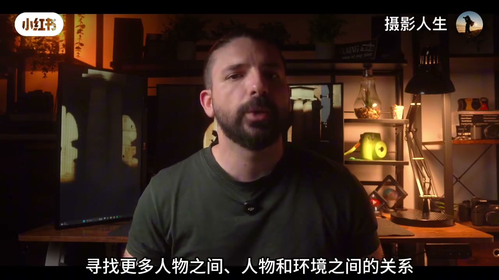

内容要点
「摄影人生」转述街头摄影师基亚诺斯的五条纠偏：只拍主体、不看周围；不懂合字扫框；看不见元素关系；画面没有前中后；把一切冻住太静；以及「越干净越高阶」的执念。核心从「我想拍什么」换成「这个画面到底是什么」。
知识结构
主体好看曝光干净却滑走；有点乱的照片反而耐看——问题常在构图。
主体居中后扫四角，查抢戏的电线、亮牌、突兀色块。
路人与广告牌、前景动作与背景动作对上；好照片常常是等出来的。
前景/中景/背景连通视线，照片才有「走得进去」的深度。
降快门留拖影制造动静；干净≠有意思，可刻意保留关系与不完美。
构图不是把主体摆好看，而是组织整个画面的注意力、关系与空间；有时要等，有时要敢留「乱」。
00:00-02:15从「拍下主体」到「合字扫框」
为什么有的照片主体曝光都对，一眼就滑走；有的看起来乱，却让人多停几秒？作者把锅甩给构图。基亚诺斯新手期也是：看到有意思的人就拍人、好看场景就拍场景——发现主体、拍下主体，没错但不讲故事。
真正决定好坏的，常常是主体之外你没注意的东西。合字法则：发现主体后先别按快门，主体放中央，从中心扫右上→左上→左下→右下再回中，专查抢戏元素——脑后电线、角落亮广告牌、突兀色块。练熟后问题从「我想拍什么」变成「这个画面到底是什么」。



02:15-05:20关系与三层空间
元素少却有意思、主体漂亮却普通——差别常在关系：两路人呼应、路人与广告牌人物互动、前景动作对上背景动作。现实里他们互不相识，进同一画面就产生故事。也可以先选场景构图，再等人走进来——好照片经常是等出来的。
「杯子」隐喻：照片是二维平面，但有空间感的画面像能走进去。拆成前景、中景、背景（栏杆—树—远处的人），并检查层次是否把视线一层层送到视觉终点。没有前后纵深、全挤在一个平面上，就容易「平」。


05:20-07:36降快门与「干净陷阱」
街头是活的。有人恨不得全冻住，清晰却失生命力。近距离场景可试把 1/125、1/250 降到约 1/60：稳定主体保持清晰，移动的人车出拖影，静动同框。风险是主体也糊——抓到时满足感很强。
最后一条：以前追求极致干净，删掉多余也删掉关系。干净不等于有意思。基亚诺斯反而让画面更满一点，找更多层次与人物-环境关系，甚至保留不完美；摄影没有规定越干净就越高阶。



完整转录（171段）
以下文本由 Whisper medium 模型自动转录，可能存在少量识别误差，已尽可能修正。
为什么有些人的照片,明明主体很好看,曝光也没问题
画面甚至还挺干净,但你看一眼就滑走了
反过来有些照片可能看起来有点乱
甚至第一眼都不知道重点在哪,却能让你忍不住多看几秒
问题很多时候不在相机,也不在镜头,而在构图
基亚诺斯刚开始拍街头摄影的时候,也犯过同样的问题
看到一个有意思的人,就拍这个人
看到一个好看的场景,就拍这个场景
简单来说就是发现主体,拍下主体
这种拍法当然不会有什么大错
但拍久了以后,他发现自己的照片越来越像是在记录一个东西
而不是在讲一个故事
后来基亚诺斯才慢慢意识到
真正好的构图从来不只是把主体放到一个好看的位置这么简单
很多时候真正决定一张照片好不好看的
是主体之外那些你一开始根本没有注意到的东西
这是很多摄影新手最容易犯的问题
比如街上突然出现一个很有意思的人
你马上举起相机,对焦,构图,按快门
拍完一看,人物是挺不错,但照片就是感觉不对
为什么?因为你只看到了这个人,却没有看到这个人的周围
基亚诺斯后来给自己建立了一个很简单的习惯
他把它叫做合字法则
名字听起来挺专业,其实一点都不复杂
当他发现一个想拍的主体之后,不会马上按快门
而是先把主体放在画面中央,然后快速扫一遍整个取景框
从中间看向右上角,再扫到左上角、左下角、右下角
最后重新回到中心
这一圈下来主要检查一件事,画面里有没有什么东西在抢戏
可能是一根从人物脑袋后面冒出来的电线
也可能是角落里一个特别亮的广告牌
甚至可能只是一个颜色特别突兀的小东西
这些元素单独看都没什么
但放进照片里之后,就可能把观众的注意力直接带跑
刚开始练习的时候,这个动作确实会有点慢
尤其是在街头,可能你还没检查完一圈,那个主体已经走霉了
但练习多了之后,它会慢慢变成一种本能
基亚诺斯自己最大的变化
就是从以前的我想拍什么,变成了这个画面到底是什么
这两个问题看起来差不多,其实完全不是一回事
拍照不是把你想拍的人拍下来,而是把整个画面组织起来
当你终于学会看整个画面之后,还有一个问题会出现
为什么有些照片元素明明不多,却特别有意思
而有些照片,明明主体非常漂亮,背景也很干净
看起来却特别普通
基亚诺斯后来发现,很多时候照片真正有意思的地方
并不是某一个元素,而是元素和元素之间产生了关系
举个最简单的例子
街上有一个人,这个人本身可能没什么特别
但如果刚好有另外一个人从旁边经过
两个人的位置形成了某种呼应,照片立刻就不一样了
或者一个路人站在广告牌旁边
广告牌上的人物刚好和现实中的路人形成某种互动
甚至有时候,前景一个人的动作
刚好和背景里另一个人的动作对上了
现实生活中,他们可能互相根本不认识
但是当摄影师把他们放进同一个画面之后
他们之间就突然产生了关系
这其实就是街头摄影特别迷人的地方
所以基亚诺斯现在拍照的时候不会只想著这个人好不好看
他更关注的是
这个人和周围的东西能不能发生点什么
有时候需要反应特别快,因为这个关系可能只存在一秒
但有时候也可以反过来操作
先找到一个有意思的场景,把构图准备好
然后站在那里等,等一个人走进来,等一个动作出现
等两个原本毫无关系的元素在某一个瞬间突然对上
所以很多时候,好照片不是你拍出来的,而是你等出来的
接下来这个方法可能听起来有点奇怪
基亚诺斯会把一张照片想像成一个杯子
为什么是杯子?因为我们平时看到的照片
实际上就是一张二维的平面
但真正有空间感的照片,会让你觉得里面是有深度的
甚至会产生一种我好像可以走进去的感觉
所以基亚诺斯会把画面简单的分成三个层次
最近的是前景,中间的是中景,最远的是背景
比如前面有一道栏杆,中间有一棵树,远处站著一个人
这样一来,你的照片就不再是简单的一个人站在那里
而是有了前、中、后的空间关系
但真正有意思的地方还在后面
你要继续观察这些层次之间有没有联系
前景的栏杆能不能把视线带向中间
中间的树能不能继续把视线引到远处
背景的人又能不能成为整个画面的视觉终点
甚至你还可以让一个人出现在前景
另一个完全不认识的人出现在背景
两个人现实中毫无关系
但因为你把他们放在了合适的位置
观众却会觉得他们之间存在某种联系
这时候照片就开始有层次了
所以以后拍照的时候可以试著问自己一个问题
我的照片里面有没有前景、中景和背景
如果一张照片从前到后什么都没有
所有东西都挤在同一个平面上
那它很容易看起来比较平
但如果你开始有意识的利用空间
照片马上就会变得更加立体
当然,这件事并不容易
因为你同时要看近处、中间和远处
还要考虑他们之间的关系
但一旦拍成功,效果是真的不一样
观众看到的就不再是一张照片
而更像是一个可以走进去的场景
街头摄影有一个非常明显的特点
它是活的
人会走,车会开,自行车会经过
整个场景一直都在变化
但很多人刚开始拍街头的时候
恨不得把所有东西都冻住
这样当然可以把动作拍得非常清楚
但有时候画面也会因此失去一点生命力
所以当基亚诺斯遇到一个比较近的场景时
他会用一个很简单的小技巧
降低快门速度
比如平时你习惯用125分之1秒
或者250分之1秒
可以尝试降到60分之1秒
目的不是让整张照片拍糊
而是故意留下一点运动模糊
尤其是街头摄影
你可以找一个相对稳定的主体
然后让其他人在它周围运动
比如公交站里的人基本没动
但前面的行人、自行车和汽车不断经过
这时候如果把快门降下来
移动的人和车会出现一点拖影
而相对静止的主体还是比较清楚
这样一来照片里面就同时出现了静合动
整个画面一下就活起来了
当然这个方法非常考验技术
稍微控制不好
主体也会跟著糊掉
但这恰恰是它有意思的地方
因为当你真的抓到那个瞬间
得到一张既有主体又有运动感的照片时
那种满足感真的很强
所以如果你觉得自己的街头照片
总是太规整、太静
可以偶尔大胆一点
把快门速度降下来试试
最后这个问题是基亚诺斯自己
花了很长时间才意识到的
以前的特别喜欢干净的照片
背景不能乱
主体周围不能有多余东西
画面最好简单一点
再简单一点
最后终于得到了一张非常干净的照片
但干净不等于有意思
有时候你为了让照片看起来更整洁
把所有东西都删掉了
结果也把照片里最有意思的关系一起删掉了
前面说过
一张照片的趣味
很多时候来自不同元素之间的联系
如果你把所有东西都清理干净
当然不会乱
但也可能什么都没发生
所以最近基亚诺斯反而开始刻意往另一个方向走
它会让画面更满一点
寻找更多层次
寻找更多人物之间
人物和环境之间的关系
甚至一些看起来不完美的元素
它也会选择保留下来
有时候画面会有点挤
有点乱
甚至会让人觉得不太舒服
但没关系
因为摄影没有规定说
照片越干净就一定越高级